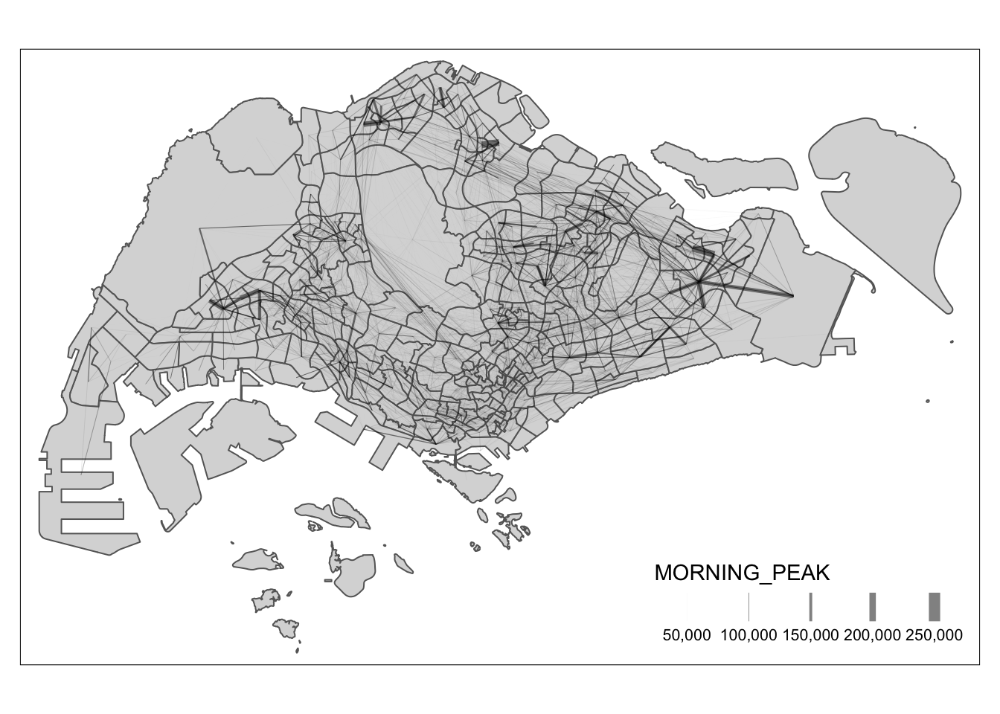

Code
pacman::p_load(tmap, sf, DT, stplanr,
performance,
ggpubr, tidyverse)LIANG YAO
November 30, 2023
December 1, 2023
Spatial interaction represent the flow of people, material, or information between locations in geographical space. It encompasses everything from freight shipments, energy flows, and the global trade in rare antiquities, to flight schedules, rush hour woes, and pedestrian foot traffic.
Each spatial interaction, as an analogy for a set of movements, is composed of a discrete origin/destination pair. Each pair can be represented as a cell in a matrix where rows are related to the locations (centroids) of origin, while columns are related to locations (centroids) of destination. Such a matrix is commonly known as an origin/destination matrix, or a spatial interaction matrix.
In this hands-on exercise, you will learn how to build an OD matrix by using Passenger Volume by Origin Destination Bus Stops data set downloaded from LTA DataMall. By the end of this hands-on exercise, you will be able:
to import and extract OD data for a selected time interval,
to import and save geospatial data (i.e. bus stops and mpsz) into sf tibble data frame objects,
to populate planning subzone code into bus stops sf tibble data frame,
to construct desire lines geospatial data from the OD data, and
to visualise passenger volume by origin and destination bus stops by using the desire lines data.
Import the passenger volume by origin destination bus stops data.
Check the data.
Rows: 5,694,297
Columns: 7
$ YEAR_MONTH <chr> "2023-10", "2023-10", "2023-10", "2023-10", "2023-…
$ DAY_TYPE <chr> "WEEKENDS/HOLIDAY", "WEEKDAY", "WEEKENDS/HOLIDAY",…
$ TIME_PER_HOUR <dbl> 16, 16, 14, 14, 17, 17, 17, 7, 14, 14, 10, 20, 20,…
$ PT_TYPE <chr> "BUS", "BUS", "BUS", "BUS", "BUS", "BUS", "BUS", "…
$ ORIGIN_PT_CODE <fct> 04168, 04168, 80119, 80119, 44069, 20281, 20281, 1…
$ DESTINATION_PT_CODE <fct> 10051, 10051, 90079, 90079, 17229, 20141, 20141, 1…
$ TOTAL_TRIPS <dbl> 3, 5, 3, 5, 4, 1, 24, 2, 1, 7, 3, 2, 5, 1, 1, 1, 1…For the purpose of this exercise, we will extract commuting flows on weekday and between 6 and 9 o’clock.
Save the output in rds format
Can extract data from saved file again.
Use sf package to read master plan subzone data and bus stop location data.
Reading layer `MPSZ-2019' from data source
`/Users/SMU/liangyao2023/ISSS624/Handson_Ex/Handson_Ex03/data/geospatial'
using driver `ESRI Shapefile'
Simple feature collection with 332 features and 6 fields
Geometry type: MULTIPOLYGON
Dimension: XY
Bounding box: xmin: 103.6057 ymin: 1.158699 xmax: 104.0885 ymax: 1.470775
Geodetic CRS: WGS 84Reading layer `BusStop' from data source
`/Users/SMU/liangyao2023/ISSS624/Handson_Ex/Handson_Ex03/data/geospatial'
using driver `ESRI Shapefile'
Simple feature collection with 5161 features and 3 fields
Geometry type: POINT
Dimension: XY
Bounding box: xmin: 3970.122 ymin: 26482.1 xmax: 48284.56 ymax: 52983.82
Projected CRS: SVY21Here we use “st_transform(crs = 3414)” to change the coordinate from decimal degree to meters.
Combine the bus stop location with the Singapore subzone map.
st_intersection() is used to perform point and polygon overly and the output will be in point sf object.
select() of dplyr package is then use to retain only BUS_STOP_N and SUBZONE_C in the busstop_mpsz sf data frame.
five bus stops are excluded in the resultant data frame because they are outside of Singapore boundary.
Rows: 5,156
Columns: 2
$ BUS_STOP_N <chr> "13099", "13089", "06151", "13211", "13139", "13109", "1311…
$ SUBZONE_C <chr> "RVSZ05", "RVSZ05", "SRSZ01", "SRSZ01", "SRSZ01", "SRSZ01",…Next, we are going to append the planning subzone code from busstop_mpsz data frame onto odbus7_9 data frame.
Before continue, it is a good practice for us to check for duplicating records.
# A tibble: 1,186 × 4
ORIGIN_BS DESTIN_BS TRIPS ORIGIN_SZ
<chr> <fct> <dbl> <chr>
1 11009 01341 1 QTSZ01
2 11009 01341 1 QTSZ01
3 11009 01411 4 QTSZ01
4 11009 01411 4 QTSZ01
5 11009 01421 17 QTSZ01
6 11009 01421 17 QTSZ01
7 11009 01511 19 QTSZ01
8 11009 01511 19 QTSZ01
9 11009 01521 2 QTSZ01
10 11009 01521 2 QTSZ01
# ℹ 1,176 more rowsIf duplicated records are found, the code chunk below will be used to retain the unique records.
Next, we will update od_data data frame cwith the planning subzone codes.
# A tibble: 1,350 × 5
ORIGIN_BS DESTIN_BS TRIPS ORIGIN_SZ SUBZONE_C
<chr> <chr> <dbl> <chr> <chr>
1 01013 51071 2 RCSZ10 CCSZ01
2 01013 51071 2 RCSZ10 CCSZ01
3 01112 51071 66 RCSZ10 CCSZ01
4 01112 51071 66 RCSZ10 CCSZ01
5 01112 53041 4 RCSZ10 BSSZ01
6 01112 53041 4 RCSZ10 BSSZ01
7 01121 51071 8 RCSZ04 CCSZ01
8 01121 51071 8 RCSZ04 CCSZ01
9 01121 82221 1 RCSZ04 GLSZ05
10 01121 82221 1 RCSZ04 GLSZ05
# ℹ 1,340 more rowsIt is time to save the output into an rds file format.
In this section, you will learn how to prepare a desire line by using stplanr package.
We will not plot the intra-zonal flows. The code chunk below will be used to remove intra-zonal flows.
In this code chunk below, od2line() of stplanr package is used to create the desire lines.
To visualise the resulting desire lines, the code chunk below is used.

When the flow data are very messy and highly skewed like the one shown above, it is wiser to focus on selected flows, for example flow greater than or equal to 5000 as shown below.